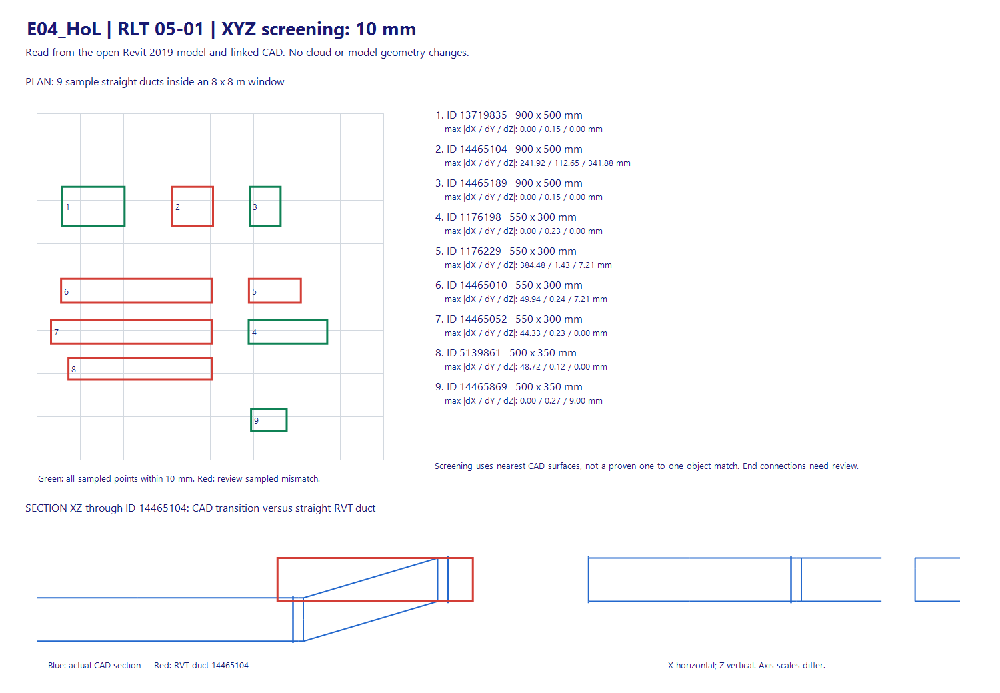
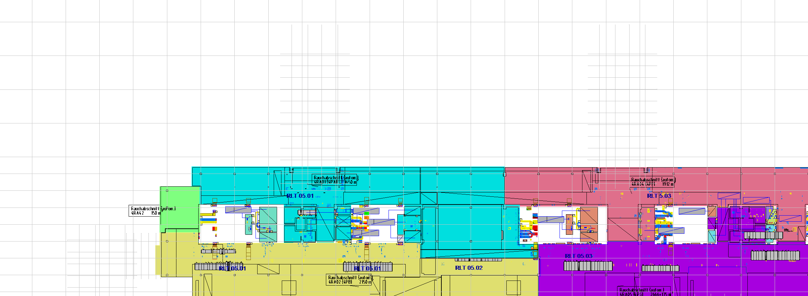

Vùng RLT 05-01, cửa sổ phân tích 8 × 8 m. Ngày 13/11/2026. Dữ liệu đọc trực tiếp từ phiên Revit 2019.2.6 đang mở. Chưa tạo Revision Cloud; không lưu hoặc đồng bộ model.
CAD: 412_11115_04_430_RLT-_8_68_GR_IL--_101_R_01_Combine_RVT.dwg. Element ID 14512644. Link dạng model 3D, không phải view-specific. Transform không xoay, scale 1; origin Z +15.000 mm. Đã áp dụng transform trong quá trình duyệt geometry; không dịch bù hoặc căn lại dữ liệu để làm khớp.
9 đoạn chữ nhật thẳng, 2880 điểm kiểm tra. 4 đoạn có toàn bộ điểm mẫu trong ngưỡng 10 mm theo từng trục; 5 đoạn có điểm vượt ngưỡng. Các trị số là độ lệch bề mặt lấy mẫu tới điểm gần nhất trên bề mặt CAD, không phải vector dịch chuyển của toàn bộ đoạn ống.

| Số | Element ID | W × H (mm) | max |ΔX| (mm) | max |ΔY| (mm) | max |ΔZ| (mm) | Điểm trong ngưỡng | Nhận xét |
|---|---|---|---|---|---|---|---|
| 1 | 13719835 | 900 × 500 | 0.00 | 0.15 | 0.00 | 100.0% | Trong ngưỡng tại điểm mẫu |
| 2 | 14465104 | 900 × 500 | 241.92 | 112.65 | 341.88 | 30.0% | Cần xem xét |
| 3 | 14465189 | 900 × 500 | 0.00 | 0.15 | 0.00 | 100.0% | Trong ngưỡng tại điểm mẫu |
| 4 | 1176198 | 550 × 300 | 0.00 | 0.23 | 0.00 | 100.0% | Trong ngưỡng tại điểm mẫu |
| 5 | 1176229 | 550 × 300 | 384.48 | 1.43 | 7.21 | 66.7% | Cần xem xét |
| 6 | 14465010 | 550 × 300 | 49.94 | 0.24 | 7.21 | 97.1% | Cần xem xét |
| 7 | 14465052 | 550 × 300 | 44.33 | 0.23 | 0.00 | 97.4% | Cần xem xét |
| 8 | 5139861 | 500 × 350 | 48.72 | 0.12 | 0.00 | 97.1% | Cần xem xét |
| 9 | 14465869 | 500 × 350 | 0.00 | 0.27 | 9.00 | 100.0% | Trong ngưỡng tại điểm mẫu |
Cực đại mỗi trục có thể thuộc các điểm khác nhau. Giá trị gần 0 có giới hạn độ chính xác do tessellation: đối chiếu mẫu analytic với mesh RVT sai khác tối đa 0,267 mm.
ID 14465104: RVT là đoạn ngang 900 × 500 mm, tâm Z 9.835 mm. Mặt cắt CAD cho thấy đoạn chuyển cao độ trong phạm vi tương ứng. Chỉ 30% điểm mẫu nằm trong ngưỡng; cần kiểm tra hình học đoạn này trước khi đánh cloud.
ID 1176229: điểm lệch lớn tập trung theo X, tối đa khoảng 384,48 mm. Các ID 14465010, 14465052 và 5139861 vượt khoảng 44–50 mm theo X gần đầu nối. Cần phân biệt độ dài đoạn, vị trí fitting và cách chia phần tử.
ID 14465869: sai khác Z lớn nhất khoảng 9,00 mm, vẫn trong ngưỡng đã chọn.
Đây là kiểm tra hình học sơ bộ một chiều RVT → CAD, chưa chứng nhận hai mô hình tương đương hoàn toàn. Chưa có ghép đối tượng CAD–RVT một-một; các bề mặt CAD đang match nằm trên layer generic CAD. Không kết luận thiếu/thừa phần tử từ phép đo này. Không so sánh toàn bộ fittings, ống tròn, bảo ôn và mặt đầu. Không coi đoạn trong ngưỡng tại điểm mẫu là chứng minh toàn bộ bề mặt trong ngưỡng.
Mẫu lấy trên bốn mặt bên của ống chữ nhật, bước dọc tối đa 100 mm, 4 điểm theo bề rộng mỗi mặt, bỏ 50 mm ở mỗi đầu. Tính khoảng cách Euclid tới tam giác CAD gần nhất, kể cả mặt nghiêng, trong lân cận bounding box mở rộng 1 m. So sánh từng thành phần |ΔX|, |ΔY|, |ΔZ| ≤ 10 mm. Không bù Z, không best-fit. ROI theo XY đi xuyên tất cả Z; dữ liệu CAD/RVT được đưa về hệ tọa độ internal world của Revit, đơn vị mm.
Khung lấy dữ liệu ban đầu khoảng 27,88 × 15,67 m: 301 Duct, 145.219 primitives, 0 lỗi trích xuất được ghi nhận. Kết quả bảng chỉ gồm 9 đoạn trong vùng 8 × 8 m, không phải kết luận cho toàn bộ 301 đoạn.
